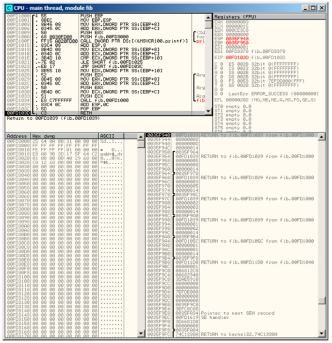
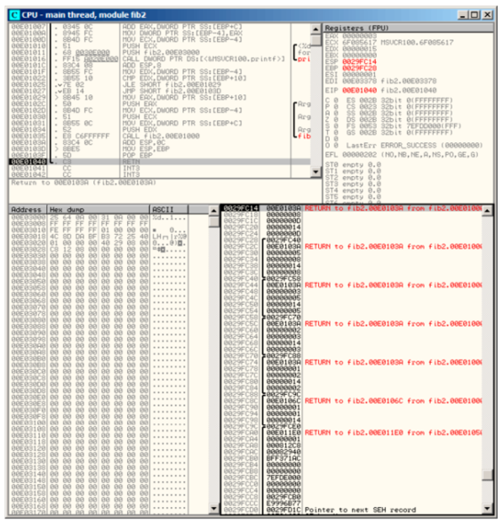

第三十六章
斐波那契数列
另一个在编程教材中普遍使用的例子是，一个用来生成斐波那契数列的递归函数。
这个序列非常简单：每个数字都是前面两个数字的和。打头的两个数字都是1或者是0,1,1。
该序列起始是这样的：
0, 1, 1, 2, 3, 5, 8, 13, 21, 34, 55, 89, 144, 233, 377, 610, 987, 1597, 2584, 4181...
36.1 例一
这个实现起来比较简单。下面这个程序产生直到21的序列。
#include <stdio.h>
void fib (int a, int b, int limit)
{
printf ("%d\n", a+b);
if (a+b > limit)
return;
fib (b, a+b, limit);
};
int main()
{
printf ("0\n1\n1\n");
fib (1, 1, 20);
};
Listing 36.1: MSVC 2010 x86
_a$ = 8 ; size = 4
_b$ = 12 ; size = 4
_limit$ = 16 ; size = 4
_fib PROC
push ebp
mov ebp, esp
mov eax, DWORD PTR _a$[ebp]
add eax, DWORD PTR _b$[ebp]
push eax
push OFFSET $SG2643
call DWORD PTR __imp__printf
add esp, 8
mov ecx, DWORD PTR _a$[ebp]
add ecx, DWORD PTR _b$[ebp]
cmp ecx, DWORD PTR _limit$[ebp]
jle SHORT $LN1@fib
jmp SHORT $LN2@fib
$LN1@fib:
mov edx, DWORD PTR _limit$[ebp]
push edx
mov eax, DWORD PTR _a$[ebp]
add eax, DWORD PTR _b$[ebp]
push eax
mov ecx, DWORD PTR _b$[ebp]
push ecx
call _fib
add esp, 12
$LN2@fib:
pop ebp
ret 0
_fib ENDP
_main PROC
push ebp
mov ebp, esp
push OFFSET $SG2647
call DWORD PTR __imp__printf
add esp, 4
push 20
push 1
push 1
call _fib
add esp, 12
xor eax, eax
pop ebp
ret 0
_main ENDP
我们将用这个来说明一下栈帧。
让我们在OllyDbg中加载这个例子，并且跟踪到最后一次对f()函数的调用：

图 36.1: OllyDbg: 最后一次对f()的调用
让我们来更加仔细地研究一下栈。本书的作者向其中加了一些注释（在这个例子中，就是把OllyDbg中的多个条目copy到剪切板中(Ctrl-C)）：
0035F940 00FD1039 RETURN to fib.00FD1039 from fib.00FD1000
0035F944 00000008 1st argument: a
0035F948 0000000D 2nd argument: b
0035F94C 00000014 3rd argument: limit
0035F950 /0035F964 saved EBP register
0035F954 |00FD1039 RETURN to fib.00FD1039 from fib.00FD1000
0035F958 |00000005 1st argument: a
0035F95C |00000008 2nd argument: b
0035F960 |00000014 3rd argument: limit
0035F964 ]0035F978 saved EBP register
0035F968 |00FD1039 RETURN to fib.00FD1039 from fib.00FD1000
0035F96C |00000003 1st argument: a
0035F970 |00000005 2nd argument: b
0035F974 |00000014 3rd argument: limit
0035F978 ]0035F98C saved EBP register
0035F97C |00FD1039 RETURN to fib.00FD1039 from fib.00FD1000
0035F980 |00000002 1st argument: a
0035F984 |00000003 2nd argument: b
0035F988 |00000014 3rd argument: limit
0035F98C ]0035F9A0 saved EBP register
0035F990 |00FD1039 RETURN to fib.00FD1039 from fib.00FD1000
0035F994 |00000001 1st argument: a
0035F998 |00000002 2nd argument: b
0035F99C |00000014 3rd argument: limit
0035F9A0 ]0035F9B4 saved EBP register
0035F9A4 |00FD105C RETURN to fib.00FD105C from fib.00FD1000
0035F9A8 |00000001 1st argument: a \
0035F9AC |00000001 2nd argument: b | prepared in main() for f1()
0035F9B0 |00000014 3rd argument: limit /
0035F9B4 ]0035F9F8 saved EBP register
0035F9B8 |00FD11D0 RETURN to fib.00FD11D0 from fib.00FD1040
0035F9BC |00000001 main() 1st argument: argc \
0035F9C0 |006812C8 main() 2nd argument: argv | prepared in CRT for main()
0035F9C4 |00682940 main() 3rd argument: envp /
该函数是递归的，因此看起来就像个“三明治”。我们能够看出参数limit总是相同的（0x14或20），但是参数a和b在每次调用时都是不同的。其中也有RA（Return Address，返回地址）和保存的EBP值。OllyDbg可以决定基于EBP的帧，所以就画出了这些中括号（]）。每个中括号中的值构成了栈帧，换句话说，每一个函数都使用栈来作为暂存空间。我们也可以说每一个函数都不能访问超出其帧边界的栈元素（不包括函数参数），虽然这在技术上是有可能的。上一句话通常是正确的，除非函数中有了bug。每个保存的EBP值为前一栈帧的地址：这就是有些调试器可以很容易地划分在帧中的栈和dump每个函数参数的原因。
正如我们在这里所见，每一个函数都为下一个函数调用准备好了参数。
在最后有用于main()函数的三个参数。argc值为1（是的，我们确实没有用命令行参数来运行程序）。
这样很容易导致栈溢出：只是删除（或注释）掉limit检测，程序就会抛出0xC00000FD异常而崩溃（stack overflow）。
36.2 例二
我构造的函数有些冗余，所以就让我们来添加一个局部变量next并用它代替所有的"a+b"：
#include <stdio.h>
void fib (int a, int b, int limit)
{
int next=a+b;
printf ("%d\n", next);
if (next > limit)
return;
fib (b, next, limit);
};
int main()
{
printf ("0\n1\n1\n");
fib (1, 1, 20);
};
以下的输出是MSVC非优化编译的输出，所以next变量在局部栈中分配空间。
_next$ = -4 ; size = 4
_a$ = 8 ; size = 4
_b$ = 12 ; size = 4
_limit$ = 16 ; size = 4
_fib PROC
push ebp
mov ebp, esp
push ecx
mov eax, DWORD PTR _a$[ebp]
add eax, DWORD PTR _b$[ebp]
mov DWORD PTR _next$[ebp], eax
mov ecx, DWORD PTR _next$[ebp]
push ecx
push OFFSET $SG2751 ; '%d'
call DWORD PTR __imp__printf
add esp, 8
mov edx, DWORD PTR _next$[ebp]
cmp edx, DWORD PTR _limit$[ebp]
jle SHORT $LN1@fib
jmp SHORT $LN2@fib
$LN1@fib:
mov eax, DWORD PTR _limit$[ebp]
push eax
mov ecx, DWORD PTR _next$[ebp]
push ecx
mov edx, DWORD PTR _b$[ebp]
push edx
call _fib
add esp, 12
$LN2@fib:
mov esp, ebp
pop ebp
ret 0
_fib ENDP
_main PROC
push ebp
mov ebp, esp
push OFFSET $SG2753 ; "0\n1\n1\n"
call DWORD PTR __imp__printf
add esp, 4
push 20
push 1
push 1
call _fib
add esp, 12
xor eax, eax
pop ebp
ret 0
_main ENDP
让我再一次加载OllyDbg：

图 36.2: OllyDbg: 最后一次对f()调用
现在next变量就出现在每一个帧中。
让我们来更加仔细地研究一下栈。作者也向其中加了他的注释：
0029FC14 00E0103A RETURN to fib2.00E0103A from fib2.00E01000
0029FC18 00000008 1st argument: a
0029FC1C 0000000D 2nd argument: b
0029FC20 00000014 3rd argument: limit
0029FC24 0000000D "next" variable
0029FC28 /0029FC40 saved EBP register
0029FC2C |00E0103A RETURN to fib2.00E0103A from fib2.00E01000
0029FC30 |00000005 1st argument: a
0029FC34 |00000008 2nd argument: b
0029FC38 |00000014 3rd argument: limit
0029FC3C |00000008 "next" variable
0029FC40 ]0029FC58 saved EBP register
0029FC44 |00E0103A RETURN to fib2.00E0103A from fib2.00E01000
0029FC48 |00000003 1st argument: a
0029FC4C |00000005 2nd argument: b
0029FC50 |00000014 3rd argument: limit
0029FC54 |00000005 "next" variable
0029FC58 ]0029FC70 saved EBP register
0029FC5C |00E0103A RETURN to fib2.00E0103A from fib2.00E01000
0029FC60 |00000002 1st argument: a
0029FC64 |00000003 2nd argument: b
0029FC68 |00000014 3rd argument: limit
0029FC6C |00000003 "next" variable
0029FC70 ]0029FC88 saved EBP register
0029FC74 |00E0103A RETURN to fib2.00E0103A from fib2.00E01000
0029FC78 |00000001 1st argument: a \
0029FC7C |00000002 2nd argument: b | prepared in f1() for next f1()
0029FC80 |00000014 3rd argument: limit /
0029FC84 |00000002 "next" variable
0029FC88 ]0029FC9C saved EBP register
0029FC8C |00E0106C RETURN to fib2.00E0106C from fib2.00E01000
0029FC90 |00000001 1st argument: a \
0029FC94 |00000001 2nd argument: b | prepared in main() for f1()
0029FC98 |00000014 3rd argument: limit /
0029FC9C ]0029FCE0 saved EBP register
0029FCA0 |00E011E0 RETURN to fib2.00E011E0 from fib2.00E01050
0029FCA4 |00000001 main() 1st argument: argc \
0029FCA8 |000812C8 main() 2nd argument: argv | prepared in CRT for main()
0029FCAC |00082940 main() 3rd argument: envp /
在这里我们可以看出：next的值在每次函数调用时都被计算一遍，然后将其作为参数b传递给下一个函数。
36.3 总结
递归函数看起来很nice，但是因为它们对栈的笨重用法在技术上可能会降低性能。所以在写有关性能的关键代码时应该要避免使用递归。
例如，本书的作者曾经写过一个在二叉树中搜寻特定节点的函数。使用递归函数看起来很优雅，但是因为在每次函数调用的开头和结尾会花费额外的时间，它就比使用迭代（不用递归）的情况慢好几倍。
By the way，这是一些函数式PL（Programming language，编程语言，LISP, Python, Lua等）编译器（其中大量使用递归）使用tail call的原因。